This dashboard/report provides automated insights into the drivers and outcomes of paddy production systems at the landscape level in Kerala’s two major paddy-growing regions- the Kole lands of Thrissur and the paddy belts of Palakkad. It summarises key findings from the Landscape Assessment Survey (LCAS) conducted in these two districts as part of Component 1.2, Alternate Wetting and Drying (AWD)- Catalysing Transitions to Low-Emission Rice-Based Systems in Kerala, under the KERA initiative.
Building a comprehensive data stack for digital landscape analytics and systems assessment is essential for identifying greenhouse gas (GHG) emission hotspots. This foundation will support the co-development and strategic targeting of low-emission packages (LEPs), minimizing unintended consequences while capturing potential positive externalities.
📊 Initial Overview
The dataset contains data from the following districts of Kerala: Palakkad, and Thrissur from the years 2023 and 2024 for the 3 major cropping seasons of rice,namely Virippu,Mundakan and Puncha. The dataset contains 1,239 samples, and the following distribution of samples across the sample districts:
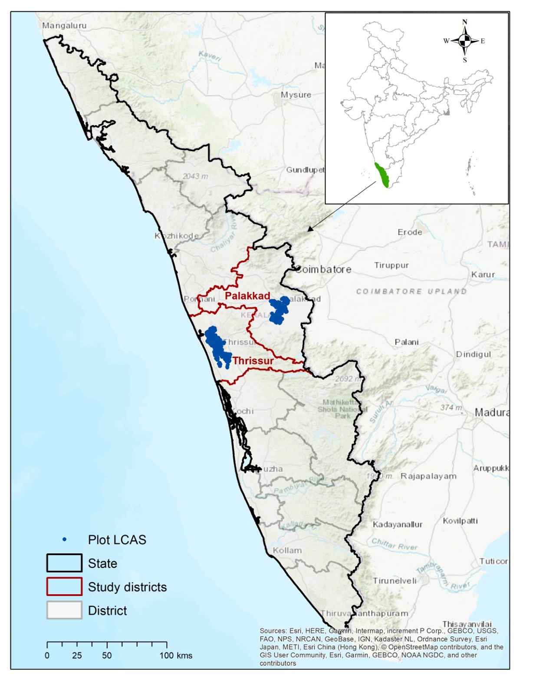
District
Number of blocks
Number of panchayats
Palakkad
6.00
13.00
Thrissur
6.00
29.00
District
Number of padasekharams
% of farmer respondents
Palakkad
109.00
39.71
Thrissur
152.00
60.29
Demography
Age & Farming Experience
The average age of the respondent is 61.97 years, with a standard deviation of 10.31 years.The average farming experience of the respondent is 30.33 years, with a standard deviation of 16.21 years.The distribution is as follows:
District
Age of the respondent(years)
Palakkad
62.60
Thrissur
61.54
District
Farming experience respondent(years)
Palakkad
33.65
Thrissur
28.14
The composition of the sample based on caste,gender,educational qualifications and marital status is as follows:
Caste
District
General (%)
OBC (%)
SC (%)
ST (%)
Palakkad
9.76
85.98
3.66
0.00
Thrissur
40.70
49.00
8.57
0.40
Gender
District
Male (%)
Female(%)
Palakkad
90.04
9.96
Thrissur
86.61
13.39
District
Illiterate (%)
No formal education (%)
Primary School (class 1 - 5) (%)
Middle School (class 6 - 8)(%)
Secondary School (class 9 - 10) (%)
Higher Secondary/Vocational (class 11 - 12) (%)
Diploma/Certificate (after class 10)(%)
Diploma/Certificate (after class 12)(%)
Graduate (%)
Postgraduate(%)
Education
Palakkad
1.22
0.81
6.71
11.99
52.44
11.38
2.24
2.85
9.15
1.22
Thrissur
0.27
0.54
8.17
13.92
41.37
12.85
3.35
3.35
13.12
2.54
Marital status
District
Single(%)
Married(%)
Divorced(%)
Separated(%)
Widowed(%)
Palakkad
3.86
91.67
0.41
0.00
4.07
Thrissur
4.28
90.76
0.40
0.13
4.42
Household Economic Profile
Annual household income
The composition of annual household income amongst the respondents is as follows:
District
< ₹ 50,000 (%)
₹ 50,000-₹ 1,00,000 (%)
₹ 1,00,001- ₹ 2,50,000 (%)
₹ 2,50,001- ₹ 5,00,000 (%)
₹ 5,00,001- ₹ 10,00,000 (%)
₹ 10,00,001- ₹ 15,00,000 (%)
₹ 15,00,001- ₹ 20,00,000 (%)
> ₹ 20,00,000 (%)
Palakkad
22.56
31.71
25.81
12.40
4.27
2.03
0.20
0.61
Thrissur
15.53
31.33
28.11
17.67
5.22
1.47
0.13
0.27
Share of agriculture in household income
The distribution of the proportional share of agriculture in household income is as follows:
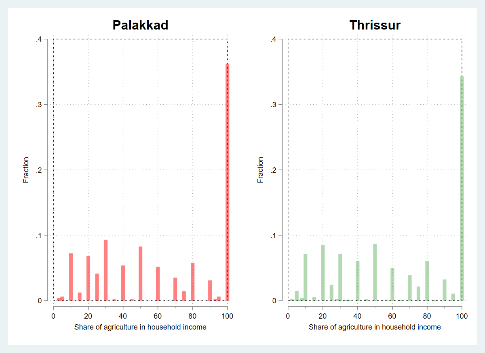
Indebtedness
The proportion of respondents who have current outstanding loans is as follows:
District
Has outstanding loan (%)
Palakkad
61.99
Thrissur
61.71
Details of agricultural land
Possession of owned/leased-in agricultural land
The average size of the owned agricultural land is 2.73 acres, with a standard deviation of 7.09 acres. The average size of the leased-in agricultural land is 2.34 acres, with a standard deviation of 10.76 acres.The distribution is as follows:
District
Owned ag.land(acres)
Leased-in ag.land (acres)
Palakkad
3.00
1.30
Thrissur
2.55
3.02
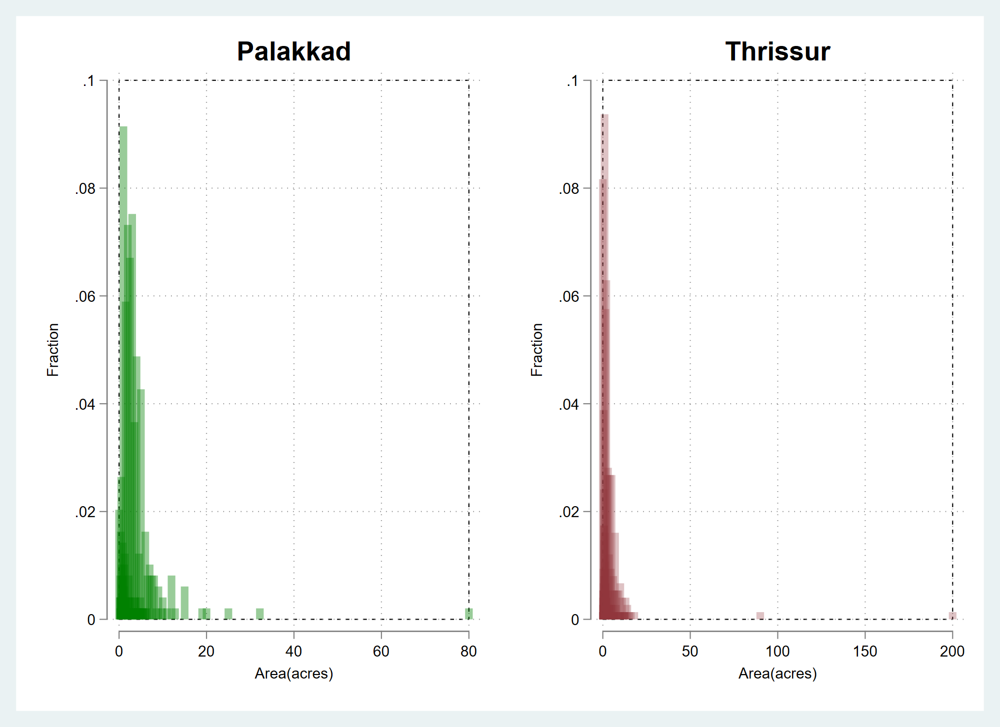
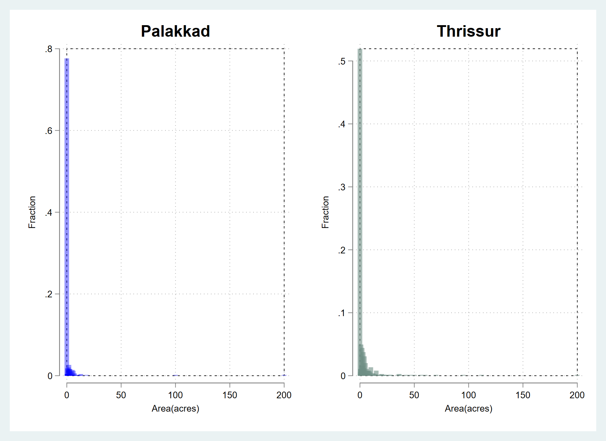
Gross cultivated area under Paddy
The average gross area under paddy,cultivated across padasekharams is 5.14 acres, with a standard deviation of 10.37 acres.The distribution is as follows:
District
Gross paddy area across padasekharams(acres)
Palakkad
5.76
Thrissur
4.72
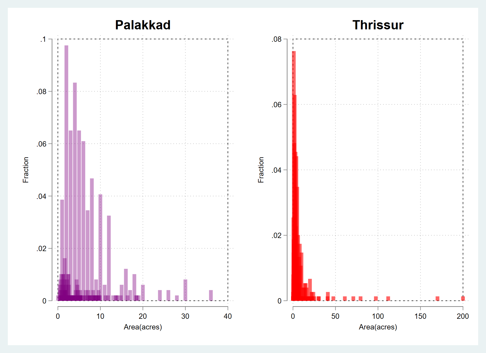
Area of the largest paddy parcel cultivated
Virippu
Amongst those who cultivated,the average area of the largest paddy parcel cultivated in Virippu is 2.1 acres, with a standard deviation of 2.05 acres.The distribution is as follows:
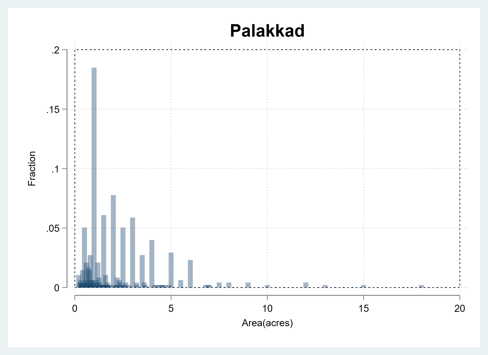
Mundakan
Amongst those who cultivated, the average area of the largest paddy parcel cultivated in Mundakan is 2.19 acres, with a standard deviation of 2.37 acres.The distribution is as follows:
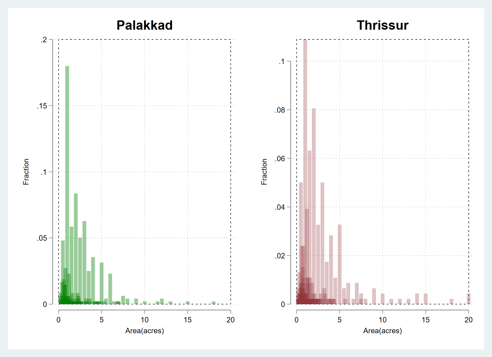
Puncha
Amongst those who cultivate, average area of the largest paddy parcel cultivated in Puncha is 2.29 acres, with a standard deviation of 2.78 acres.The distribution is as follows:
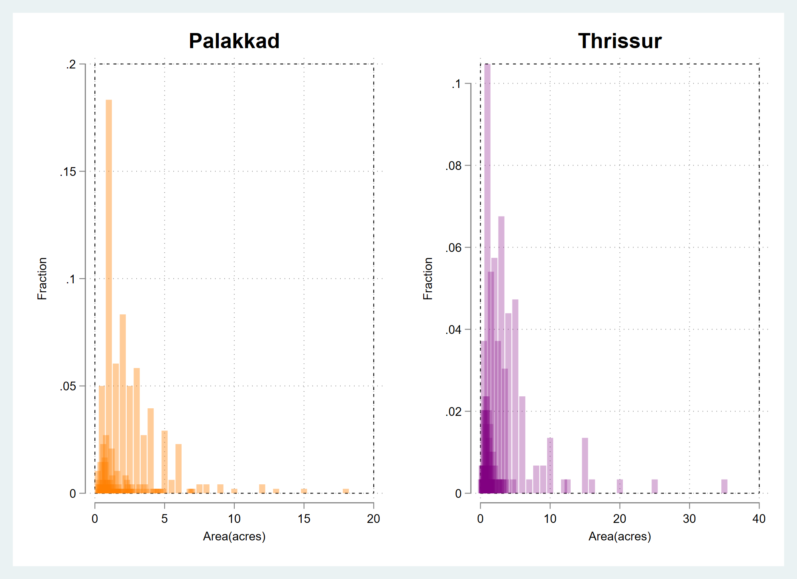
District
Virippu (acres)
Mundakan (acres)
Puncha (acres)
Palakkad
2.10
2.15
2.20
Thrissur
0.00
2.22
2.61
Location of the largest parcel of land under Paddy
The average distance of the largest paddy parcel from the field canal is 210.79 metres, with a standard deviation of 416.12 metres.The distribution of the location of these parcels as measured as distance from the field canal (metres) is as follows:
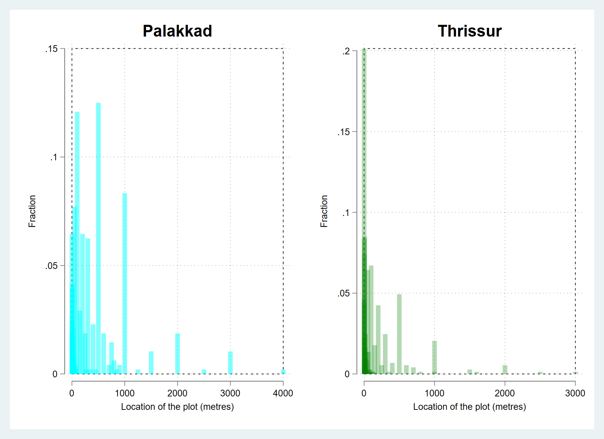
District
Distance from the field canal(metres)
Palakkad
353.08
Thrissur
117.23
Production Details
Please click on the relevant sub-section tabs to read further details under production.
Season of cultivation
The proportion of respondents cultivating paddy in each season is as follows:
District
Virippu (%)
Mundakan (%)
Puncha (%)
Palakkad
96.75
95.12
2.85
Thrissur
.
61.45
39.63
The following subsections present averages and tabulations for respondents who cultivated in that particular season.
Choice of varieties
The three topmost varietal choices in each season is as follows:
Virippu
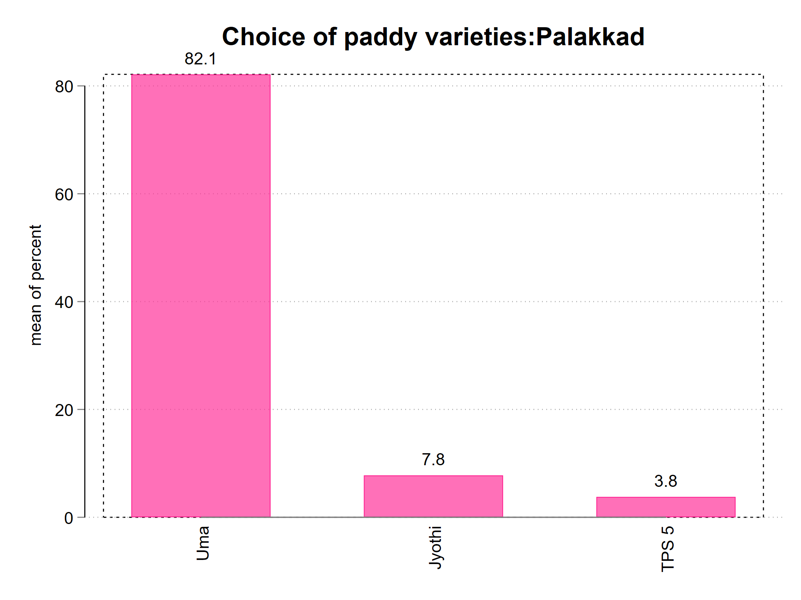
Mundakan
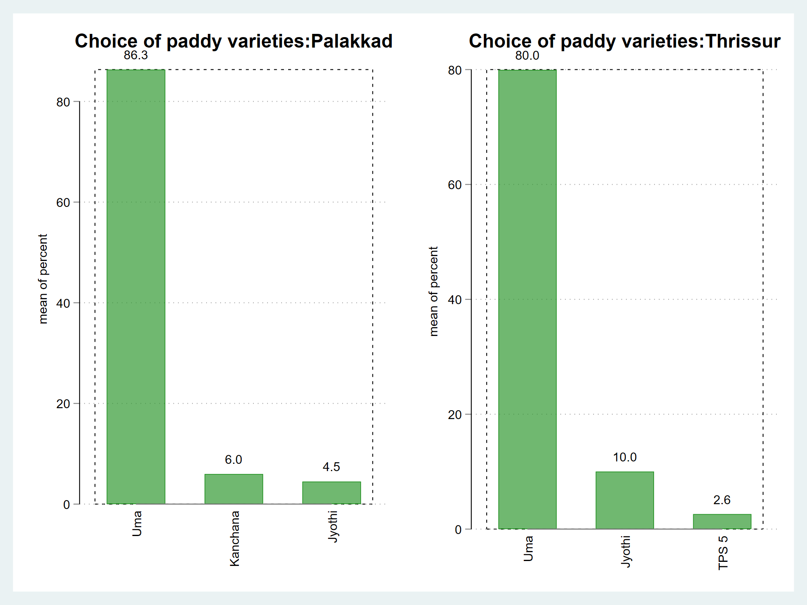
Puncha
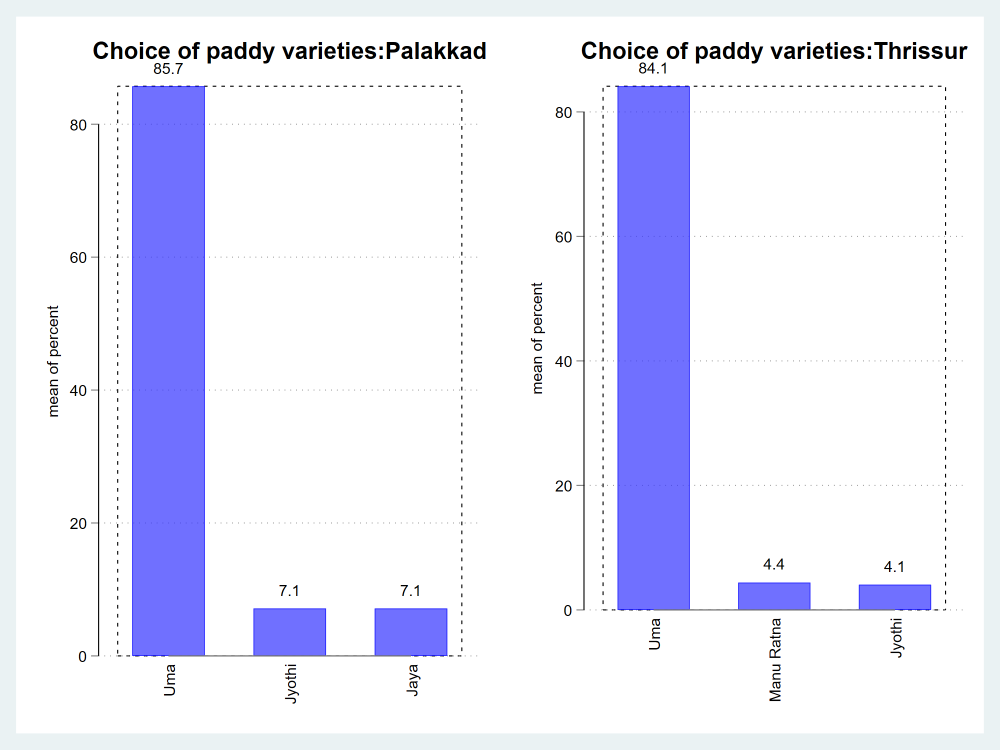
Seed rate
Virippu
The average seed rate application for Virippu is 36.55 kg/acre, with a standard deviation of 13.78 kg/acre.
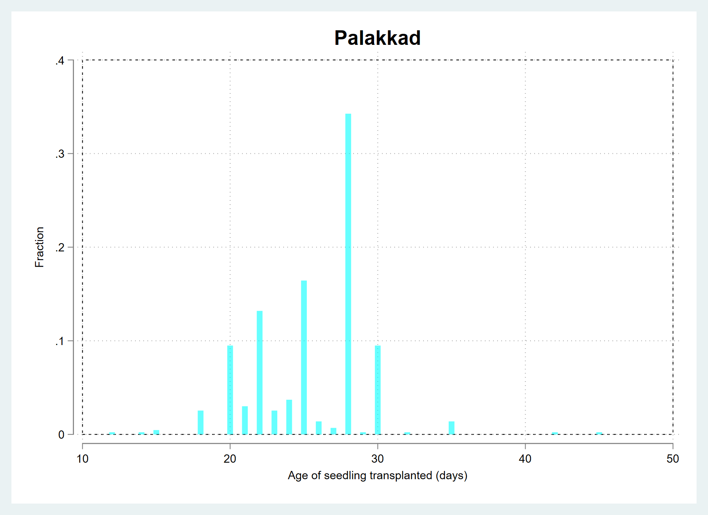
Mundakan
The average seed rate application for Mundakan is 35.34 kg/acre, with a standard deviation of 11.37 kg/acre.
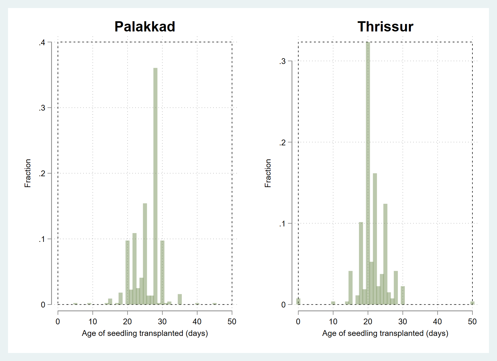
Puncha
The average seed rate application for Puncha is 35.81 kg/acre, with a standard deviation of 14.44 kg/acre.
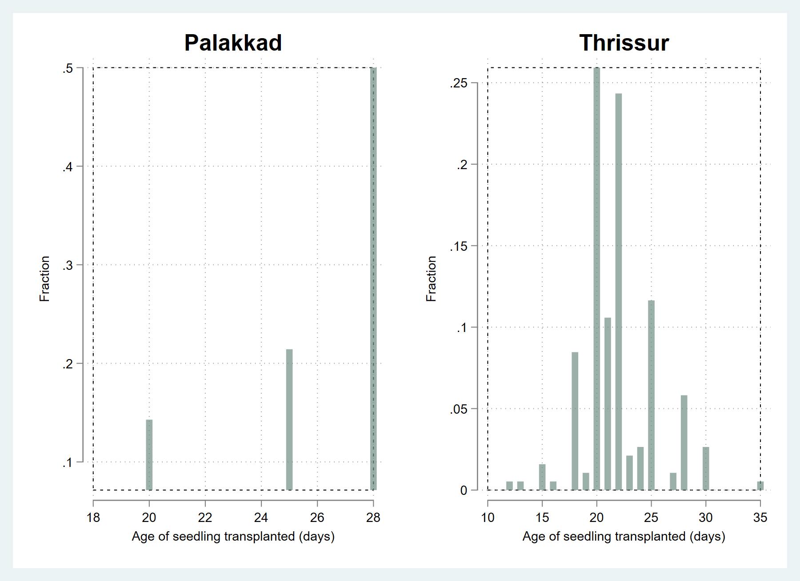
Age of seedling transplanted
Virippu
The average age of seedling when transplanted in Virippu is 25.42 days, with a standard deviation of 3.88 days.
Mundakan
The average age of seedling when transplanted in Mundakan is 23.98 days, with a standard deviation of 4.56 days.
Puncha
The average age of seedling when transplanted in Puncha is 22.09 days, with a standard deviation of 3.38 days.
Seed treatment
The proportion of respondents choosing to follow seedtreatment in each season is as follows:
District
Virippu (%)
Mundakan (%)
Puncha (%)
Palakkad
21.85
22.86
14.29
Thrissur
.
63.83
63.85
Crop establishment method
The choice of crop establishment method by the respondents in each season is as follows:
Virippu
District
Manual transplanting (random) (%)
Manual transplanting (line) (%)
Mechanical transplanting (%)
Hand broadcasting (%)
Wet direct seeding (%)
Palakkad
46.22
46.64
1.26
5.25
Thrissur
0.00
0.00
0.00
0.00
Mundakan
District
Manual transplanting (random) (%)
Manual transplanting (line) (%)
Mechanical transplanting (%)
Hand broadcasting (%)
Wet direct seeding (%)
Palakkad
47.65
45.30
1.28
5.77
0.00
Thrissur
24.62
30.50
3.70
40.96
0.22
Puncha
District
Manual transplanting (random) (%)
Manual transplanting (line) (%)
Mechanical transplanting (%)
Hand broadcasting (%)
Wet direct seeding (%)
Palakkad
85.71
14.29
0.00
0.00
Thrissur
29.73
32.77
2.70
34.80
Day of transplanting
The temporal distribution of transplanting dates for each season is shown below:
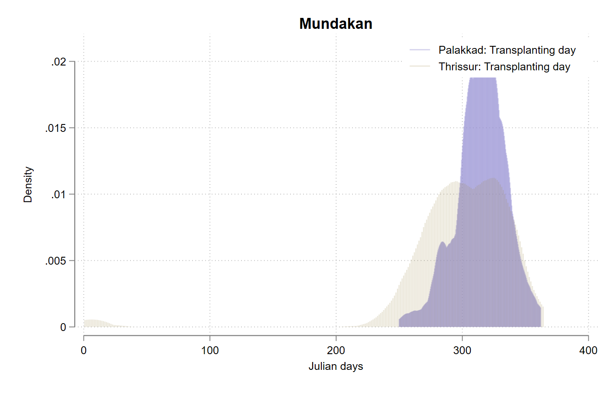
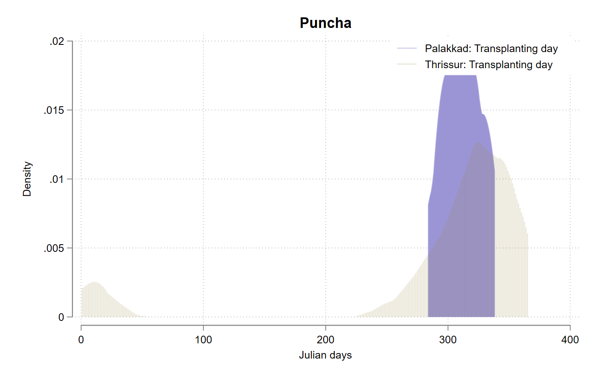
Land preparation method
The choice of land preparation method by the respondents in each season is as follows:
Virippu
District
Ploughing & Puddling (%)
Ploughing & Harrowing (%)
Laser leveling(%)
Palakkad
94.12
4.83
Thrissur
0.00
0.00
Mundakan
District
Ploughing & Puddling (%)
Ploughing & Harrowing (%)
Laser leveling(%)
Palakkad
96.37
3.63
0.00
Thrissur
92.59
7.19
0.22
Puncha
District
Ploughing & Puddling (%)
Ploughing & Harrowing (%)
Laser leveling(%)
Palakkad
100.00
0.00
0.00
Thrissur
90.54
9.12
0.34
Application of organic manure
The following subsections present averages and tabulations for respondents who cultivated in that particular season.
The proportion of respondents choosing to apply organic manure in each season is as follows:
District
Virippu (%)
Mundakan (%)
Puncha (%)
Palakkad
34.03
38.03
28.57
Thrissur
.
35.51
35.47
Types of organic manure applied
The proportion of respondents choosing to apply each type of organic manure in each season is as follows:
Virippu
District
Used farmyard manure (%)
Used green manure (%)
Used stubble (%)
Used vermi compost (%)
Palakkad
27.94
NA
NA
NA
Total
27.94
NA
NA
NA
Mundakan
District
Used farmyard manure (%)
Used green manure (%)
Used stubble (%)
Used vermi compost (%)
Palakkad
29.06
5.98
2.35
0.43
Thrissur
28.32
1.96
0.87
0.87
Total
28.69
3.97
1.61
0.65
Puncha
District
Used farmyard manure (%)
Used green manure (%)
Used stubble (%)
Used vermi compost (%)
Palakkad
14.29
7.14
0.00
0.00
Thrissur
28.38
4.39
1.35
1.01
Total
21.33
5.76
0.68
0.50
District
Virippu (kg/acre)
Mundakan (kg/acre)
Puncha (kg/acre)
Quantity of organic manure applied
The average quantity of organic manure applied in Virippu is 414.63 kg/acre.The average quantity of organic manure applied in Mundakan is 298.78 kg/acre. The average quantity of organic manure applied in Puncha is 414.63 kg/acre.
Palakkad
414.63
424.45
408.97
Thrissur
.
176.75
150.09
Types of fertilizers applied
The proportion of respondents choosing to apply each type of fertiizer in each season is as follows:
Virippu
District
Lime (%)
Urea (%)
DAP(%)
MOP(%)
SSP (%)
Factamfos(%)
Micronutrients(%)
Bio-fertilizer(%)
Palakkad
68.07
NA
NA
NA
NA
NA
NA
NA
Total
68.07
NA
NA
NA
NA
NA
NA
NA
Mundakan
District
Lime (%)
Urea (%)
DAP(%)
MOP(%)
SSP (%)
Factamfos(%)
Micronutrients(%)
Bio-fertilizer(%)
Palakkad
60.26
95.73
1.07
91.67
1.92
85.04
10.47
1.28
Thrissur
97.39
91.50
3.70
85.19
1.53
72.55
15.90
3.92
Total
78.82
93.62
2.39
88.43
1.72
78.80
13.18
2.60
Puncha
District
Lime (%)
Urea (%)
DAP(%)
MOP(%)
SSP (%)
Factamfos(%)
Micronutrients(%)
Bio-fertilizer(%)
Palakkad
57.14
100.00
0.00
100.00
0.00
57.14
0.00
0.00
Thrissur
94.59
94.59
6.76
88.85
1.35
80.07
11.49
3.72
Total
75.86
97.29
3.38
94.42
0.68
68.60
5.74
1.86
District
Virippu (kg/acre)
Mundakan (kg/acre)
Puncha (kg/acre)
Quantity of fertilizers applied
The average quantity of nitrogen applied in Virippu is 42.4 kg/acre. The average quantity of nitrogen applied in Mundakan is 42.76 kg/acre. The average quantity of nitrogen applied in Puncha is 39.85 kg/acre.
Palakkad
42.40
44.89
29.11
Thrissur
NA
40.62
40.38
District
Virippu (kg/acre)
Mundakan (kg/acre)
Puncha (kg/acre)
The average quantity of phosphorus applied in Virippu is 16 kg/acre. The average quantity of phosphorus applied in Mundakan is 16.35 kg/acre. The average quantity of phosphorus applied in Puncha is 15.49 kg/acre.
Palakkad
16.00
16.98
10.80
Thrissur
NA
15.70
15.72
District
Virippu (kg/acre)
Mundakan (kg/acre)
Puncha (kg/acre)
The average quantity of potassium (K) applied in Virippu is 24.54 kg/acre. The average quantity of potassium (K) applied in Mundakan is 27.64 kg/acre. The average quantity of potassium (K) applied in Puncha is 30.39 kg/acre.
Palakkad
24.54
25.40
20.72
Thrissur
NA
30.00
30.89
Pestide and Weedicide Application
The proportion of respondents choosing to follow pesticide and weedicide application in each season is as follows:
District
Virippu (%)
Mundakan (%)
Puncha (%)
Palakkad
88.87
90.60
92.86
Thrissur
.
94.34
94.93
District
Virippu (%)
Mundakan (%)
Puncha (%)
Palakkad
95.59
97.01
100.00
Thrissur
.
96.51
96.96
Water availability and drainage scenario in the paddyland operated
The water availability and drainage scenario,as per the respondents, in the paddy parcels based on their proximity to head/middle/tail end of tertiary/secondary canals is as follows:
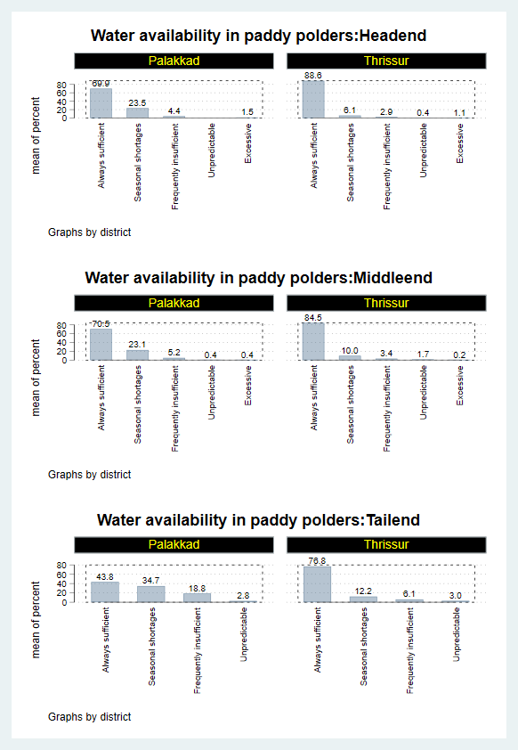
Water maintenance in the field
Water maintenance in the field by the respondents in each season is as follows:
Virippu
District
Always flooded(Except before harvest)(%)
Mostly flooded(Except before harvest) (%)
Sometime flooded,sometimes dry(%)
Mostly dry(%)
Palakkad
27.52
35.50
12.39
0.21
Thrissur
0.00
0.00
0.00
0.00
Mundakan
District
Always flooded(Except before harvest)(%)
Mostly flooded(Except before harvest) (%)
Sometime flooded,sometimes dry(%)
Mostly dry(%)
Palakkad
28.21
53.63
15.81
0.43
Thrissur
28.32
42.92
27.23
0.00
Puncha
District
Always flooded(Except before harvest)(%)
Mostly flooded(Except before harvest) (%)
Sometime flooded,sometimes dry(%)
Mostly dry(%)
Palakkad
21.43
21.43
50.00
0.00
Thrissur
18.24
40.20
39.53
0.34
Yield (tones/ha)
Virippu
The average yield of the largest paddy parcel cultivated in Virippu is 1.55 tonnes/acre, with a standard deviation of .58 tonnes/acre.The distribution is as follows:
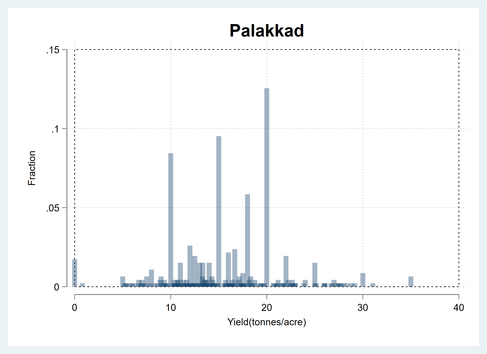
Mundakan
The average yield of the largest paddy parcel cultivated in Mundakan is 1.92 tonnes/acre, with a standard deviation of .65 tonnes/acre. The distribution is as follows:
Puncha
The average yield of the largest paddy parcel cultivated in Puncha is 1.87 tonnes/acre, with a standard deviation of .77 tonnes/acre.The distribution is as follows:
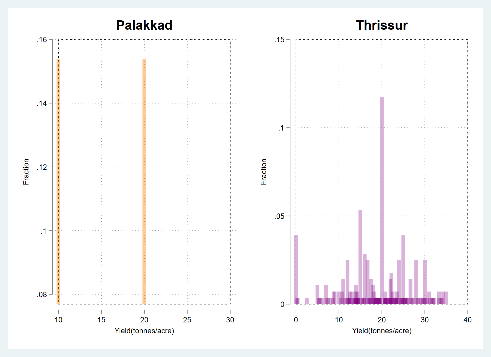
District
Virippu (tonnes/acre)
Mundakan (tonnes/acre)
Puncha (tonnes/acre)
Palakkad
1.55
1.93
1.86
Thrissur
0.00
1.91
1.87
Harvesting method
The choice of harvesting method by the respondents in each season is as follows:
Virippu
District
Combine harvester (%)
Reaper (%)
Palakkad
97.69
0.42
Thrissur
0.00
0.00
Mundakan
District
Combine harvester (%)
Reaper (%)
Manual harvest (%)
Palakkad
98.29
0.85
0.00
Thrissur
98.26
0.44
0.22
Puncha
District
Combine harvester (%)
Palakkad
100.00
Thrissur
96.62
Note: Missing percentages represent missing observations and cases of no harvest
Ways of Straw management
The proportion of respondents choosing to do straw/stubble management in the mentioned ways in each season is as follows:
Virippu
District
Use for mulching (%)
Mix with soil for manuring (%)
Use/sell it for bioenergy/biogas/biochar production (%)
Sell it for other purposes like fodder, etc(%)
Use as dry fodder for own cattle (%)
Burn it(%)
Palakkad
13.66
47.90
2.73
9.03
3.15
0.63
Total
13.66
47.90
2.73
9.03
3.15
0.63
Mundakan
District
Use for mulching (%)
Mix with soil for manuring (%)
Use/sell it for bioenergy/biogas/biochar production (%)
Sell it for other purposes like fodder, etc(%)
Use as dry fodder for own cattle (%)
Burn it(%)
Palakkad
1.71
8.76
8.76
68.16
13.68
2.99
Thrissur
4.79
4.79
6.75
58.39
20.92
7.63
Total
3.25
7.76
7.76
63.28
17.30
5.31
Puncha
District
Use for mulching (%)
Mix with soil for manuring (%)
Use/sell it for bioenergy/biogas/biochar production (%)
Sell it for other purposes like fodder, etc(%)
Use as dry fodder for own cattle (%)
Burn it(%)
Palakkad
0.00
35.71
7.14
21.43
7.14
7.14
Thrissur
7.09
7.09
2.36
54.73
15.88
11.15
Total
3.55
21.40
4.75
38.08
11.51
9.14
GHG Emissions
Farmer knowledge and willingness towards LEPs
The proportion of respondents who marked "Yes" to these statements:
Did you know that continuous flooding or water stagnation in rice field emits GHGs and pollute air?
Did you know that intermittent drying can help reduce GHG emissions from rice fields compared to continuous flooding?
Are you willing to practice improved water management such as AWD in the future?


 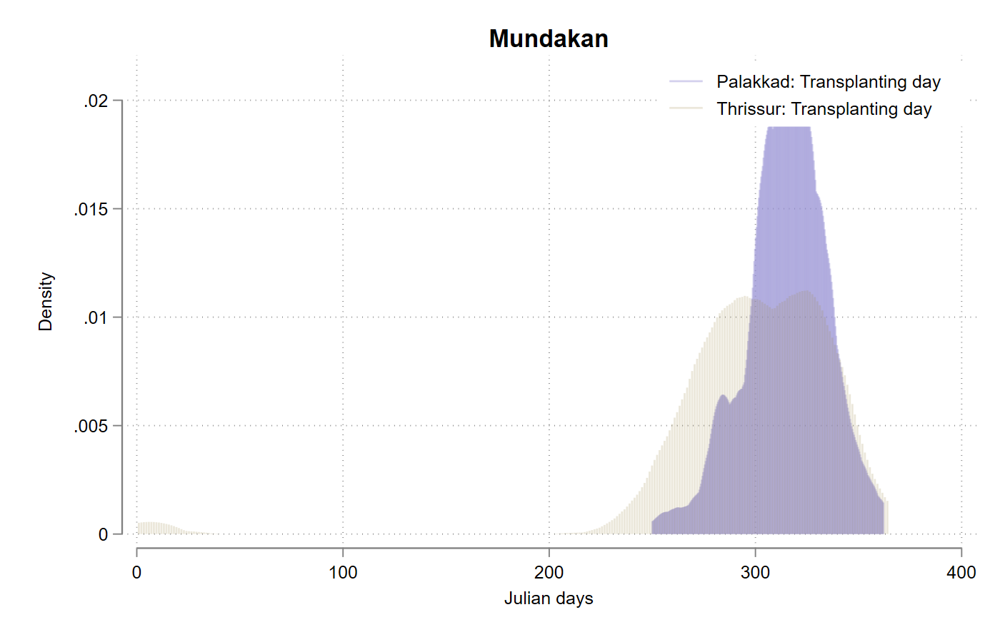
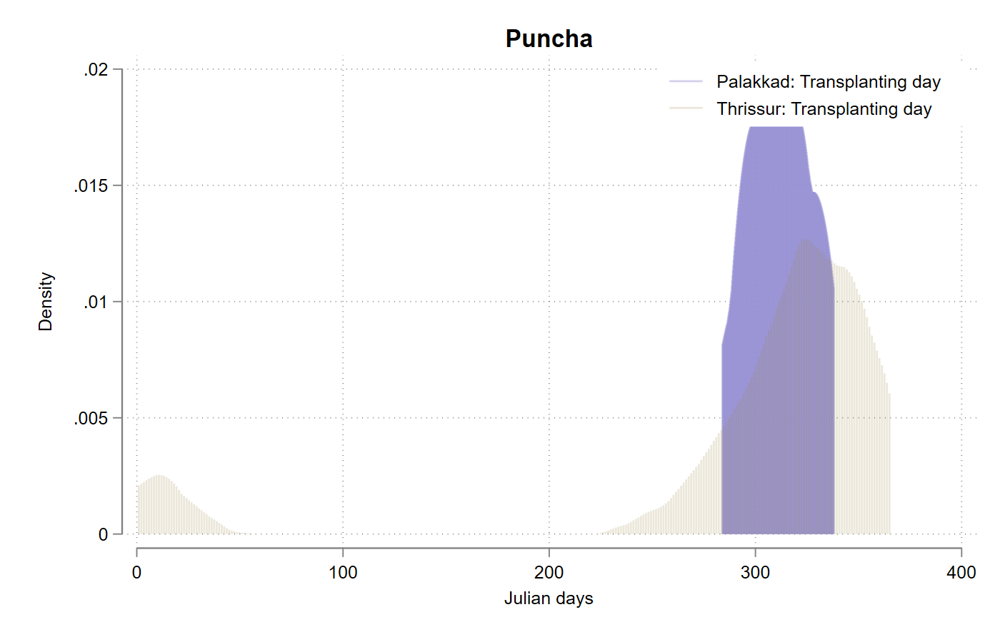
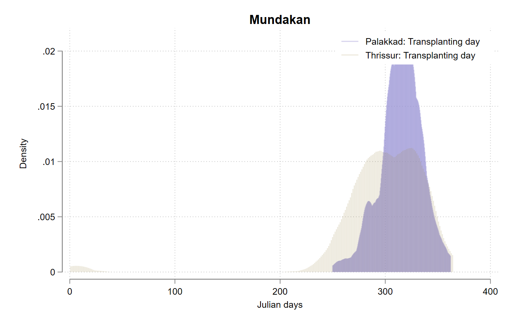
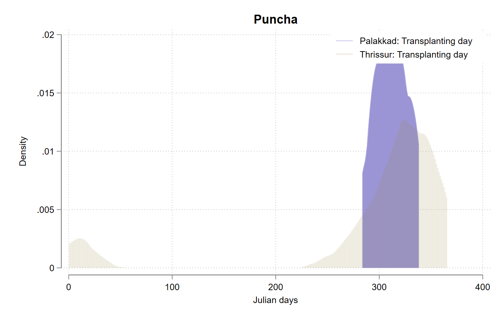


{kind=link}